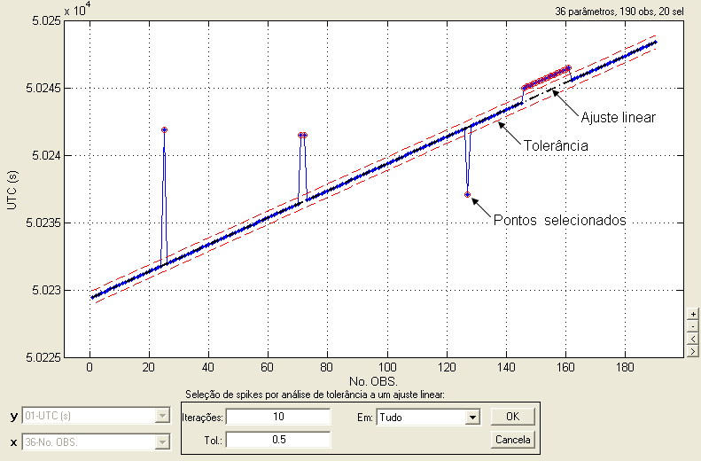
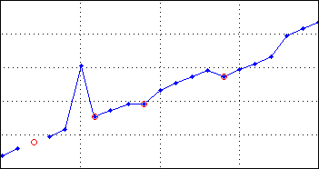
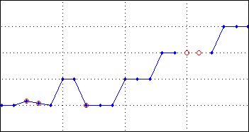

| Menu Dados |
|
Selecionar
Ruído no Tempo
Essa função
permite selecionar os pontos ruidosos e anômalos
em um parâmetro de tempo através de uma análise de tolerância a um
ajuste
linear.
- Selecione em “y” o
parâmetro de tempo que deseja analisar.
- Clique no menu
“Dados ► Selecionar ... ► Ruído no tempo”.
A Caixa de
Diálogo solicitará que o usuário indique os
parâmetros para a operação, e o gráfico apresentará o resultado
preliminar da
seleção:

● No campo
“Iterações”, indique
o número de iterações da operação (ver descrição do método abaixo);
● No campo “Tol.”, indique a
tolerância desejada para identificação do ruído com relação ao ajuste
linear;
● No campo
“Em”, indique em que parte do parâmetro
deseja realizar a análise. As opções são:
|
Opção |
Descrição |
|
Tudo |
Em toda a
extensão do parâmetro. |
|
Intervalo |
Apenas no
intervalo selecionado (intervalo visível no gráfico). |
A cada
alteração dos parâmetros, o resultado preliminar e a quantidade
de pontos selecionados (apresentada no canto superior direito da
janela) serão
atualizados:

Ao clicar “OK”
a seleção atual será mantida.
Uma vez
selecionados todos os
pontos ruidosos, pode-se usar a função “Interpolar
pontos
selecionados”
para corrigir as anomalias ou simplesmente eliminar esses pontos com a
função “Excluir
pontos
selecionados”.
Lógica da
Operação
O método é
baseado na análise de tolerância dos pontos a um
ajuste linear do parâmetro de tempo, repetido certo número de vezes
(iterações).
As premissas
básicas do método são:
- O parâmetro de
tempo é amostrado a interrvalos regulares (cadência constante);
- Não há
interrupções na aquisição de dados no intervalo analisado (sem degraus
de
tempo). Caso necessário, use intervalos de análise separados e com a opção “Intervalo” selecionada.
Os passos para
a obtenção do ruído são os seguintes:
1- É realizado
um
ajuste linear do parâmetro y em função do parâmetro “No. OBS.” (número
de
observações);
2- Todos os
pontos
que estiverem fora da tolerância indicada com relação à reta ajustada
são
selecionados;
3- É realizado
novo
ajuste, desconsiderando os pontos selecionados no passo anterior;
4- Os pontos que
estiverem fora da tolerância são recalculados e resselecionados;
5- Volta-se ao
passo 3 até o número de
iterações indicado.
A cada
iteração, um número maior de pontos ruidosos será
selecionado, resultando em um ajuste mais próximo da reta correta.
| Nota: O número de
iterações e a tolerância são parâmetros fundamentais para o
funcionamento do método. Alterne os valores conforme necessário até
obter o melhor resultado. |
Selecionar
Pontos
Inadequados de Tempo
Essa função
permite selecionar os pontos que tornam o
parâmetro y inadequado para ser usado como tempo, permitindo ao usuário
a
rápida identificação dos mesmos.
Para que um
parâmetro de tempo seja adequado, o mesmo deve
ser monotônico, crescente e sem pontos inválidos (NaN).
Dessa forma, a função irá selecionar todos os
pontos em que ocorre:
- Repetição do
valor;
- Redução do
valor; e
- Pontos
inválidos.
Clique no menu “Dados ►
Selecionar ... ► Pontos inadequados de tempo”.
Os pontos
inadequados serão selecionados:

|
Nota: A função não
seleciona inteiramente as anomalias no parâmetro de tempo, apenas os
pontos inválidos, repetidos e decrescentes. A figura acima mostra
anomalias do tipo spike
e offset que não são inteiramente
selecionadas. Para corrigir essas anomalias, é necessário selecionar
todos os pontos inadequados (manualmente ou pela função “Selecionar
ruído no tempo”)
e usar a função “Interpolar
pontos selecionados”, usando o método “Linear”. |
Caso já haja
pontos selecionados, o R_DAT questionará o
usuário se deseja acrescentar os novos pontos aos anteriores ou
substituí-los:

Selecionar
Pontos
Inadequados de TOP
Essa função
permite selecionar os pontos que tornam o
parâmetro y inadequado para ser usado como TOP, permitindo ao usuário
a
rápida identificação dos mesmos.
Para que um
parâmetro de TOP seja adequado, o mesmo deve
ser composto de valores inteiros, não negativos, sem
pontos inválidos (NaN) e não
decrescentes.
Dessa forma, a função irá selecionar todos os
pontos em que ocorre:
- Valores não inteiros;
- Valores negativos;
- Pontos
inválidos; e
- Redução do
valor.
| Nota:
A única anomalia que torna o parâmetro inadequado de fato é a redução
de valor, que não pode ser interpretada como TOP. Nas operações em que
o parâmetro TOP é necessário, as demais anomalias são tratadas da
seguinte forma: - Valores não-inteiros são arredondados; - Valores negativos são zerados; e - Pontos inválidos são repetidos segundo o valor válido anterior. |
Clique no menu “Dados ►
Selecionar ... ► Pontos inadequados de TOP.
Os pontos
inadequados serão selecionados:

| Nota: A função não
seleciona inteiramente as anomalias no parâmetro de TOP, apenas os
pontos não inteiros, negativos, inválidos e decrescentes. A figura
acima mostra
anomalias que não são inteiramente
selecionadas. Para corrigir essas anomalias, é necessário selecionar
todos os pontos inadequados manualmente
e usar a função “Interpolar
pontos selecionados”, usando o método “Repetir”. |
Caso já haja
pontos selecionados, o R_DAT questionará o
usuário se deseja acrescentar os novos pontos aos anteriores ou
substituí-los:
| |
Selecionar |
Selecionar spikes |
|